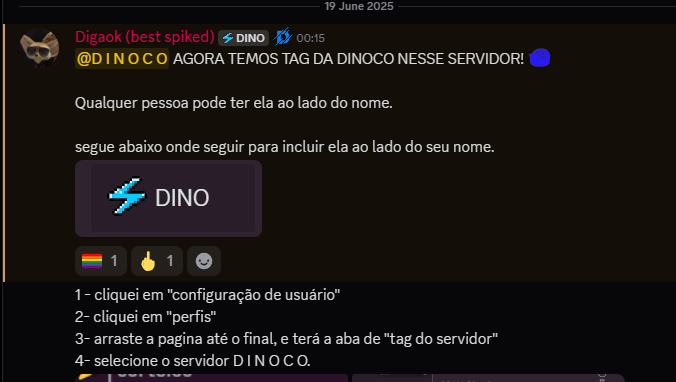

Estamos melhorando?
DINOCO faz a PROEZA de durar mais de 8 minutos em uma luta amigável contra a Contingent. Talvez os VOD's review estão realmente sendo efetivos?
Ele parou de chorar!
DINOCO FINALMENTE ganha sua esperada tag do discord, após muita confusão, membros da guilda não precisarão usar mais a tag do discord de ZvZ.
